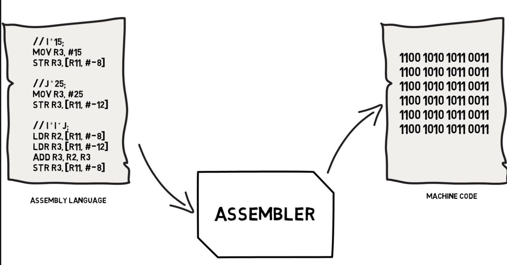

Explanation
Since the CPU will only receive 0/1 digital signal, all code will finally be translated to a kind of 0/1 sequences - called Machine Code. Therefore, Machine-Level Programming means a kind of low-level programming which is based on and closed to machine code. In addition, it will cover related underlying techniques.
Here is the low-level memory distribution of a runtime program:
The following machine-level content has four parts: Introduction to Assembly Language, Data, Procedure, Security
Introduction to Assembly Language
Why we mention Assembly Language in Machine-Level Programming? The answer is that we want to use assembly code to replace machine code in introducing Machine-Level Programm. First you can take a look at a comparation between assembly code with machine code.

I believe that if you will feel the assemble code is more understandable than machine code. In addition, assembly language is a mnemonic set of machine language instead of an ordianry programming languages, since it does not provides any abstraction.
Reasons why we choose assembly code instead of machine code:
- Easy to understand and straight forward
- Very low-level to be helpul to introduce Machine-Level Programming
What’s more, what does CPU receive and run is a bunch of directives via instructions. So both machine language and assemblly language are instruction-oriented languages. There consists of combinations of instructions.
Data
Data is the element of a program. We should consider how to represent and store it.
Representation
The last post(Data Representation) already gives the machine-level representation of data.
Organization & Store
Principle: The whole memory is just a big continuous space with address of each byte. e.g. 0x00000000 - 0xFFFFFFFF(0 - 4GB)
Elementary Types: It will be orgnized in its representation form and should consider the endianness. e.g. 15 - 0x0F
Array: It will be orgnized in a part of continuous address with the row major mode. e.g. int a[10][10] has address: 0 - 400, a[0][0-9] locates in 0 - 40 and a[1][0-9] locates in 40 - 80.
Compound Types
- Struct(Class): It will be orgnized in a part of continuous adress with each member variable following the declaration order in the space.
- Union(c specified type): It will share the same address and space, the total space size equals the largest element size.
Note: The compound type will need to satisfy the data alignment requirements in most of the modern machine
Reason: The data quantity transfering per round with the BUS is fixed. In x86-64 is 64 bits, IA32-32 is 32 bits. So fitting these will improve CPU efficiency.
Default Rule(In x86-64): The address of primitive type (size k bytes) should be a multiple of k, and the address of compound type should be a multiple of 4.
Procedure
Procedure is the core abstraction to improve code readability and reusability, it does not have any efficiency improvement on program running speed. Conversely, it will slow down your program. And it’s mainly underlying technique is Stack.
In order to implement a procedure, we will ensure the following three function: Pass control, Pass data and Manage local data inside a subroutine.
Pass Control
Two instructions to implement this function: callq function_name and retq
callq: push the next instruction address into stack, and jump to address of function_name to run this function.retq: pop the current top content of stack, treat it as the intruction’s address, run it.
Pass Data
In machine-level, data is transfered by Register which is a kind of small size container. Very fast!
The fist 6 arguments are passed by 6 registers: %rdi, %rsi, %rdx, %rcx, %r8, %9.
The other arguments are passed by stack with push and pop. But before instruction callq
Local Data Management
The local variable are stored in stack with push and pop operations.
Security
We will introduce some machine level attacks here and also give some defense teniques.
Attack: Buffer Overflow
From above introductins, we know that memory is a continous space, so it is easily for Hackers to access and modify unexpected space, especially modify stack content. For example, if we define a local variable to receive user input data with 10 bytes. But what if we do not limit the length of user input data? It will overwrite the Address! Then they can control the run order of our program.
Defense Strategies:
- Limit the input data size
- Randomized the stack address by insert a random size space in front of stack start address. Then it is hard for hackers to figure about the Figure 4’s B address.
- Canary: each time run a subroutine, we assign a special value in the stack frame, and in the return period, we check if this value is modified.
- Non-executable: Make CPU do not run instructions in stack memory.
Attack: Return-oriented Gadgets
- Disassemble program to find useful gadgets(Subroutines).
- Only modify the return address to make program run target gadgets.
- Does not overcome the Canary Defense Strategry.